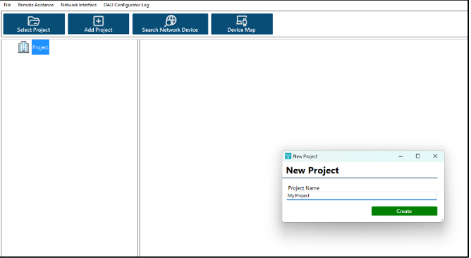
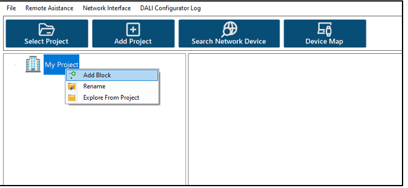
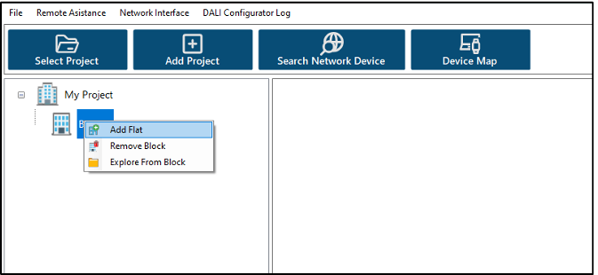
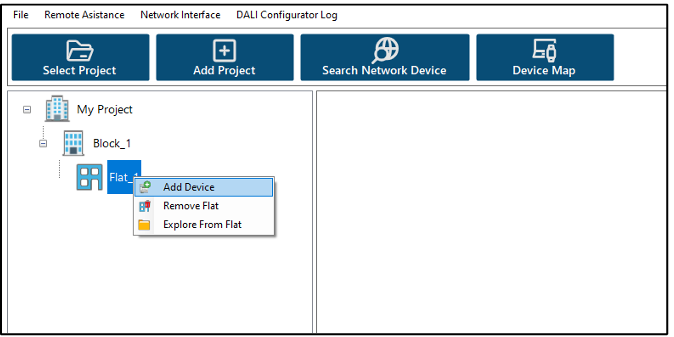
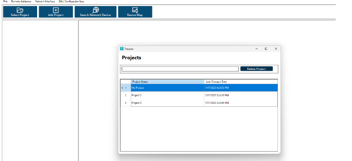

1. Creating a New Project¶
You can create a new project in the DALI Configurator program to add and manage all DALI masters, DALI input devices, and DALI control gears.
To create a new project, click the Add Project icon in the upper left corner. You will need to enter a name for your project, as shown in Picture 1.
2. Adding a Flat¶
After adding a new block, you need to give it a name. You can then add a flat by right-clicking on the block. This process is shown in Picture 2. You will also need to name the newly added flat.
3. Adding a DALI Master¶
Once a flat has been added, you can include DALI Master devices in your project. To do this, right-click on the flat and select Add Device, as shown in Picture 3. You will need to enter the DALI Master name and IP address.
4. Managing DALI Masters¶
After adding DALI Masters, your project tree will be updated, as seen in 

To remove a DALI Master, right-click on it and select Remove Device. After adding a DALI Master, you can start addressing your DALI line to identify connected input devices and control gears.
5. Opening Existing Projects¶
You can open previously created projects by clicking the Select Project icon in the upper left corner. In this window, you can also delete a project. Selecting a new project is illustrated in Picture 5.
© 2024 INTERRA | AP2309080102A | DALI Master Configurator Document